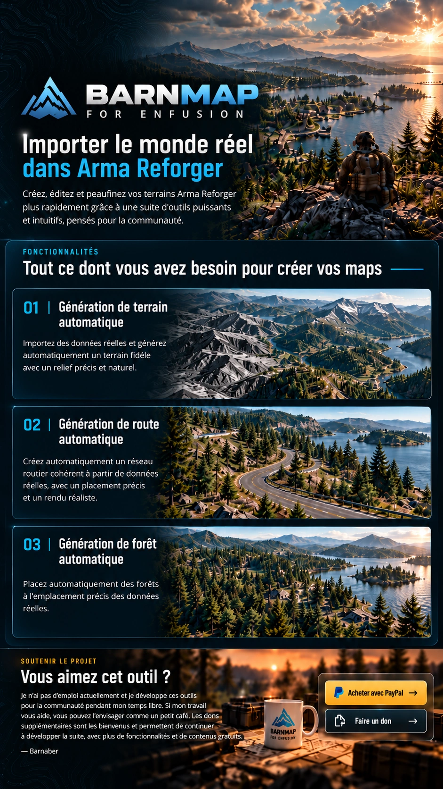

Vous recevrez un lien de téléchargement une fois le don effectué.
N’oubliez pas de notifier votre adresse mail pour recevoir les liens de mise à jour.
Acheter avec PayPal
Faire un don
N’oubliez pas de notifier votre adresse mail pour recevoir les liens de mise à jour.
BARNMAP FOR ENFUSION
Importer le monde réel dans Arma Reforger.
Fonctionnalités
Génération de terrain automatique
Importez des données réelles et générez automatiquement un terrain fidèle avec un relief précis et naturel.
Génération de route automatique
Créez automatiquement un réseau routier cohérent à partir de données réelles, avec un placement précis et un rendu réaliste.
Génération de forêt automatique
Placez automatiquement des forêts à l'emplacement précis des données réelles.